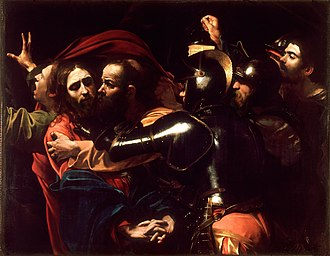

Introduction
I started reading The Republic knowing nothing about it except two things: That it’s concerned with the nature of justice, and that in it Plato lays out his vision of an ideal society. I decided to write a series of blog posts about it, one for each book, for a total of, if I can manage it, ten posts. That was to force myself to actually think about what I am reading, as well as to have some fun. As I am writing this now, I have only finished book 1. Wish me luck! And please, let me know if I misunderstood or forgot to mention anything in the comments. It wouldn’t be very Socratic of me not to wish for discussion.
Before this, I had read a few of Plato’s dialogues and I think The Republic is the only one other than The Apology where Socrates is actually narrating in first person. I wonder if that’s of some importance.
Now, before I start, let’s think first about justice, which is the main concept discussed in book 1. If we think intuitively, what is justice anyway? For me, and I think for most of us, the first thing that comes to mind is this:
A court of law. Lawyers, judges and all that. The condemnation of the maleficent and the exoneration of the innocent. But is that really what justice is? Perhaps you and I can agree that the exoneration of the innocent is just; it would be a very unjust thing to punish somebody for a crime they didn’t commit after all, but is punishing the criminal a just action? On that, a lot of us may disagree. I am not here considering the point that the laws may be wrong, that the criminal may not actually be evil; rather let the criminal of which I speak have committed a most heinous crime, the question remains: Is punishing him just? Is that what justice is, good for good and evil for evil? Giving to each what they deserve?
Well, let’s not be hasty. We have a long book to get into, after all.
The background of the dialogue
The book starts with Socrates attending a festival, alongside his friend, Glaucon, at the port of Athens when they are accosted by a group of seemingly rough types.

These rough types threaten and intimidate Socrates and Glaucon into staying at the festival instead of returning to Athens. At the head of these men is a gentleman called Polemarchus. They all then go to Polemarchus’s house, and the dialogue starts.
First definition of justice
Inside the house Socrates meets Polemarchus’s father, Cephalus, who is a rich man. Cephalus inherited most of his money from his own father, and lists the many benefits of wealth. But first and foremost of all benefits, he says, is that wealth allows one to be just. With it, one has no reason to cheat his fellow men; with it, one has less reason to lie and is able to pay back any debts that he owes and can offer sufficient sacrifices to the gods.
Socrates, naturally enough, once he had the slightest hint that Cephalus believed himself to know what justice is, asks him about it. But Cephalus is busy, with his sacrifices and the festival, and so his son, Polemarchus tells Socrates what justice is.
To Polemarchus, justice is:
The giving back of what’s owed.
But there are cases, as Socrates notes, where giving back what’s owed may be unjust. Such as when you owe your friend a gun, say, and he demands it back, but you notice that he isn’t in his right mind and something truly tragic would occur if you return it. Would it then be just to give it back?
Polemarchus agrees with this, and says that by “what’s owed” he means only what’s good to friends, and what’s bad to enemies. Socrates then makes a very strange argument which I don’t quite understand. He says to Polemarchus that then by “what’s owed” he means “what’s fitting”, and that he is saying that justice is giving to one’s friends and enemies what’s most fitting to them. All well and good. Then things take a turn for the strange.
He asks Polemarchus what is it that’s owed and fitting that the art(by art, I assume he means occupation, or craft, or suchlike) called medicine gives and to whom or what. I had better quote the whole bit of dialogue, just to prevent my own confusion.
“In the name of Zeus,” I said, “if someone were to ask him, ‘Simonides, the art called medicine gives what that is owed and fitting to which things?’ what do you suppose he would answer us?”
“It’s plain,” he said, “drugs, foods and drinks to bodies.”
“The art called cooking gives what that is owed and fitting to which things?”
“Seasonings to meats.”
“All right. Now then, the art that gives what to which things would be called justice?”
“If the answer has to be consistent with what preceded, Socrates,” he said, “the one that gives benefits and harms to friends and enemies.”
“Does he mean that justice is doing good to friends and harm to enemies?”
“In my opinion.”
Why does Socrates suddenly assume that justice is an art? That seems inexplicable to me. They continue in that direction for a while, Socrates and Polemarchus, and describe what each art is useful for. They conclude that Justice, in so much as it’s an art by assumption, is most useful when somebody is needed to guard some money. Quite the anticlimax if I may say so. In any case, Socrates does some more proof by analogy:
“Let’s look at it this way. Isn’t the man who is cleverest at landing a blow in boxing, or any other kind of fight, also the one cleverest at guarding against it?”
“Certainly.”
“And whoever is clever at guarding against disease is also cleverest at getting away with producing it?” “In my opinion, at any rate.”
“And, of course, a good guardian of an army is the very same man who can also steal the enemy’s plans and his other dispositions?”
“Certainly.”
“So of whatever a man is a clever guardian, he is also a clever thief?”
“It seems so.”
“So that if a man is clever at guarding money, he is also clever at stealing it?”
“So the argument indicates at least,” he said.
“The just man, then, as it seems, has come to light as a kind of robber, and I’m afraid you learned this from Homer. For he admires Autolycus, Odysseus’ grandfather on his mother’s side, and says he surpassed all men ‘in stealing and in swearing oaths.’ Justice, then, seems, according to you and Homer and Simonides, to be a certain art of stealing, for the benefit, to be sure, of friends and the harm of enemies. Isn’t that what you meant?”
This is all convincing enough, but the argument seems somewhat wasteful, since its main assumption, that justice is an art, is so farfetched. Wait, could it be that the argument whole point was to show that justice isn’t an art? Perhaps Socrates isn’t lying when he says that he truly wishes to know what justice is, and so he is trying to know justice by what it is not. Yes, I think that’s how it is. He isn’t simply engaging with Polemarchus, but is also trying to find out the truth for himself.
So his argument was as follows:
Assume justice is an art like medicine, or cooking, or dancing, or whatever; that it’s something to be learned and practiced
Art, in general, is the “giving of what’s owed or fitting to something”
Just as the artist is master of “giving of what’s owed or fitting to something”, he is also master at not doing that, or at giving what is not fitting. Want to demolish a building? Call a constructor(I may have just invented an aphorism)
But then a just man will turn out to be the best thief there ever was, which contradicts what we intuitively know about justice, so our assumption was wrong after all. Justice isn’t an art.
I still think the strange notion of “art” that the Greeks have is doing a lot of heavy lifting. No matter, let’s continue.
Socrates then forgets about justice as art, and attacks the definition from another direction. Now, instead of justice being art, it’s virtue. I don’t think this time is the same as before, where the main aim was to show what justice is not. I think Socrates is taking justice to be– or at least a part of– virtue because that’s something he, or rather we, all of humanity, believes. So he is really going to attack the definition here.
He tries to prove that the part about doing harm to enemies is wrong, but the argument is rather general; it won’t matter if we think of the definition as what we conjectured at the start, that it’s just to meet evil with evil. Socrates then proves that doing harm to a person causes a loss of virtue in that person using a proof by analogy– I am starting to hate proof by analogies. He says that causing harm to dogs or horses cause a loss of virtue to dogs or horses(does he assume that the virtue of dogs and horse lies in being obedient to human beings?) and so the same thing happens in humans.
But then evil for evil cannot be justice, he says, because a thing can’t produce its opposite. Heat can’t produce cold. Water can’t make something dry. So it is that justice, which is a virtue, cannot cause a loss of virtue as a byproduct.
I believe the main weakness of this argument to be the part about dogs and horses. I may have to consult a dog or a horse trainer. Would the trainer know what I am talking about if I ask what’s the virtue of an animal?
In the end, Socrates and Polemarchus become friends, and promise to wage battle on anybody who says justice is doing good to friends and harm to enemies.
“We shall do battle then as partners, you and I,” I said, “if someone asserts that Simonides, or Bias, or Pittacus or any other wise and blessed man said it.”
“I, for one,” he said, “am ready to be your partner in the battle.”
“Do you know,” I said, “to whom, in my opinion, that saying belongs which asserts that it is just to help friends and harm enemies?”
“To whom?” he said.
“I suppose it belongs to Periander, or Perdiccas, or Xerxes, or Ismenias the Theban, or some other rich man who has a high opinion of what he can do.”
“What you say is very true,” he said.
Second definition of justice
Just to be transparent, I had a lot of trouble with this section. So I will most likely say a lot of wrong and stupid things.
Socrates is then challenged by a man called Thrasymachus to give his own opinion about what justice is, instead of asking for the opinions of other men and thereafter blowing holes in their arguments. As always, Socrates is a slippery as an eel, and in the end it’s Thrasymachus and not he that gives us our second possible definition of justice.
His definition is:
Whatever is to the advantage of the stronger is just
Quite the strange definition. He clarifies it by saying that, in so much as the ruler of a city is always the strongest, and that all laws set by such rulers are to their own advantage, it’s just for the citizens to follow these laws.
There are so many holes in this definition, I doubt Plato expects us to take it seriously. Socrates again uses a proof by analogy and assumes justice is an art(Why this again?!). He says that all art is practiced for the advantage of something else, never for the advantage of the artist. Medicine, to the advantage of the body. Cooking, to the advantage of meat. Art is always to the advantage of the weaker and the ruled, not the stronger and ruler. And so the the definition can’t be correct.
I am not convinced, neither am I enlightened.
All that Socrates has shown is that there are two statements:
Justice is an art
Justice is the advantage of the stronger
And that these two statements are contradictory. Come to think of it, that’s the same thing he did previously. He showed that the first definition and the statement that justice is art are contradictory. Is this some sort of proof by exhaustion? Is whole purpose of book 1 to show that justice isn’t art by trying all possible definitions? I don’t know.
Socrates and Thrasymachus talk further about whether it’s better to be just or unjust, but Socrates’s arguments are somewhat simpler and less rigorous here. And he takes the existence of the soul for granted. I remember somewhat vaguely that Plato–or Socrates– gave a proof for its existence in the Phaedo dialogue, but I am not certain.
Well, here is book 1 one finished, and what do I now know that I hadn’t before?
That justice is certainly not an art.